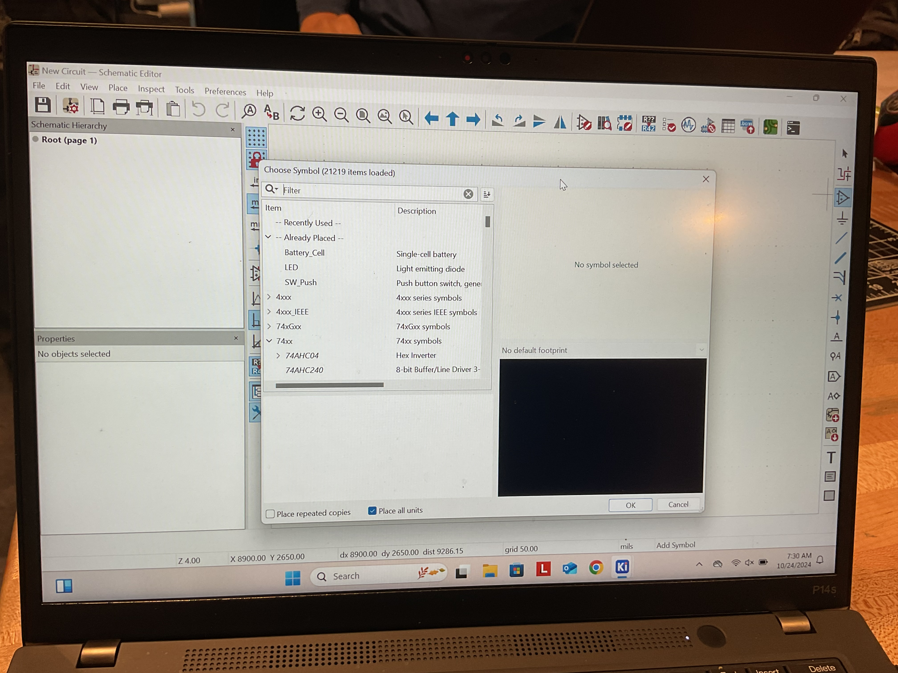
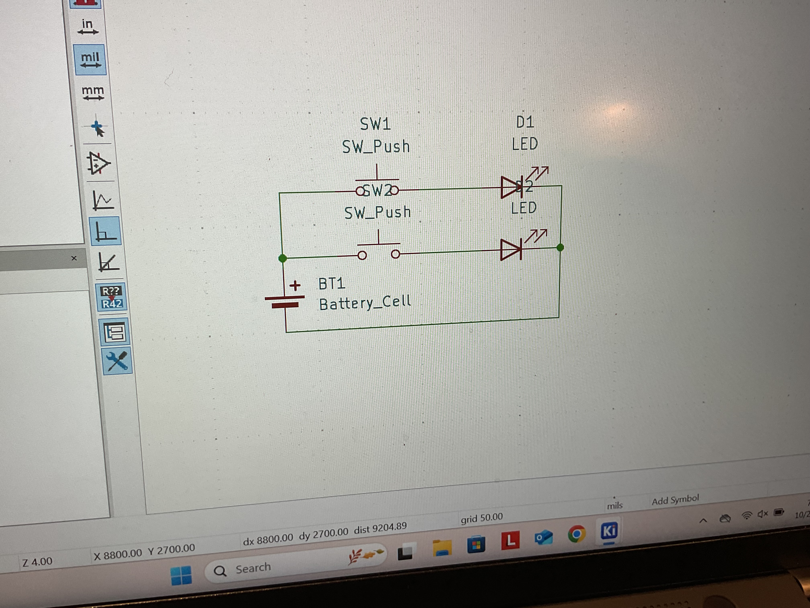
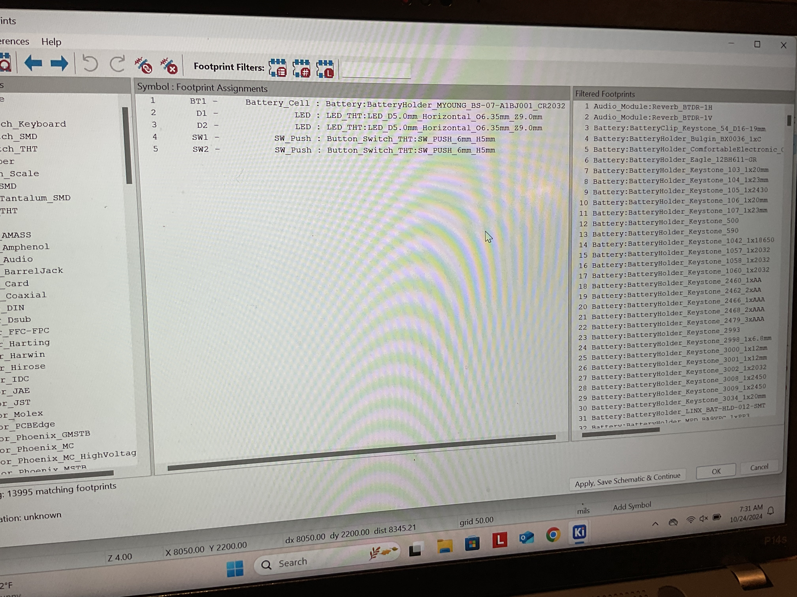
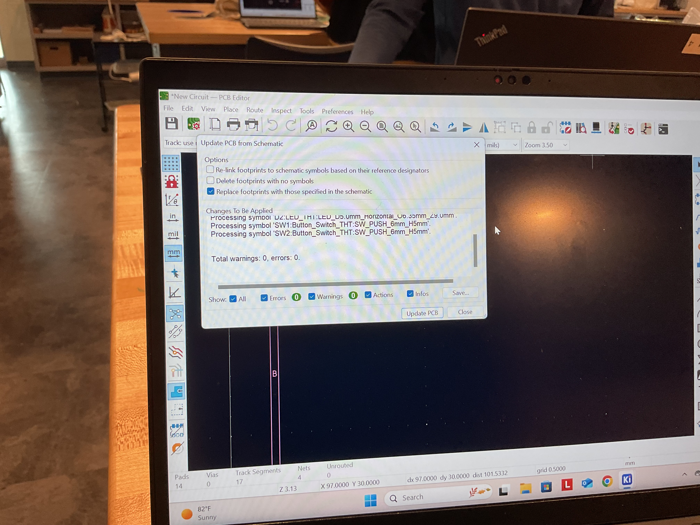
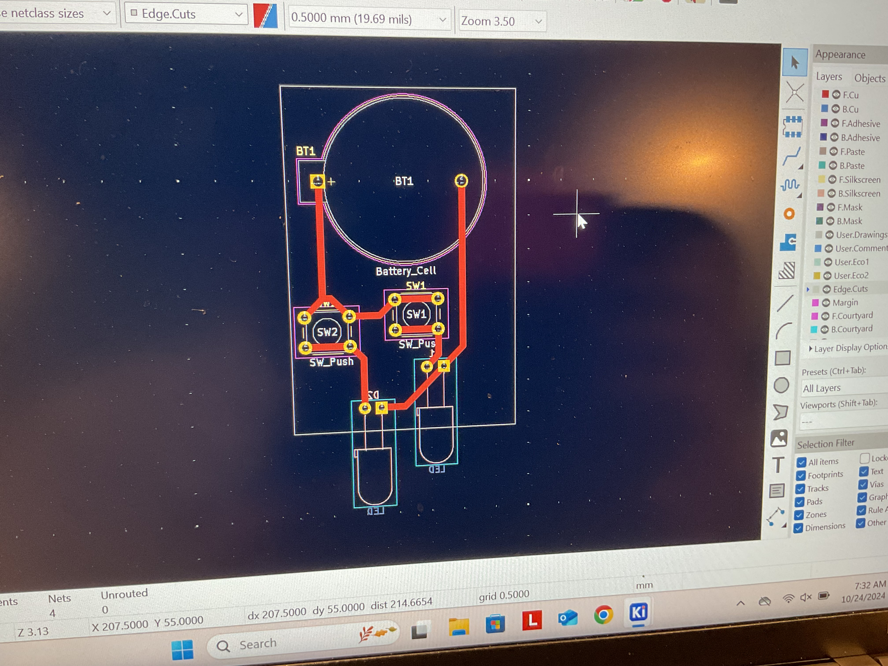

Another project that we had to in class was designing an electronic circuit to be printed out, as it is an important skill that we need to learn for engineering purposes. The software we used is called KiCAD, which is specifically used to design circuits. After we were taught the basics of using it, we were told to design a circuit with two LEDs, each controlled by a separate button. The circuit we made would be exported to our teacher and cut out to see how it worked. I began by opening the program up and finding the components I needed to use.
After I had found the components I needed for the circuit, I imported them into the schematic. Then, I began to make connections between them for when I needed to place the wires in between the components. The final circuit diagram looked like this.
After this, I began to assign the footprints to each component in the schematic. To appropriately place each component on the simulated cutting board, they must be linked to a real world part. I asked my teacher about what parts we had to assemble our circuit board, and I assigned those parts as my footprints for the virtual components.
Then, I swapped over to the PCB board editor. This is where the actual PCB board that will be made is designed using the previously assembled schematic and the assigned footprints. The first step is to import the schematic and fotprints over into the editor.
I organized the components as best as I could so no wires crosssed over and that they were all far enough away from each other. The wires were then added on to connect all the different parts, and set to the correct thickness. Finally, a border was put on the circuit to mark its edges, and it was now ready to be cut!
